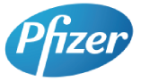
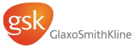
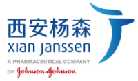
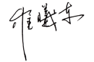
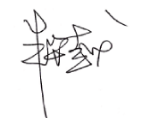

从2009到2012，嘉略咨询始终与辉瑞畅沛品牌组 通力合作，致力于对中国吸烟者意识和行为研究，无论从内容的深度和研究方法的创新及多样性上，都取得了突破，使中国这样一个在戒烟领域起步较晚的国家，很快地能和其他先进国家在同一个水平上对话，甚至一些研究的成果，成为了品牌全球策略的依据。这些研究的成果，同时被我们非常高效地运用到了中国的品牌市场策路和活动制定上。 非常有幸能够有像George shao这样的市场研究专家来领导这项研究，他对中国市场研究的专业与专注，无论对品牌发展，还是对提高中国人戒烟意识，帮助中国人摆脱戒烟的痛苦过程，选择轻松的戒烟 方式等方面，都起到了巨大的推动作用！ 辉瑞制药中国区品牌群经理 金玉
成功的品牌建立得益于对消费者的深刻了解和有效准确的消费者沟通。George的工作勿容质疑帮助了 整个品牌工作的快速迈进！ 葛兰素史克制药集团 旗下中美天津史克制药有限公司 市场经理 刘晓华
George shao为我们量身定做的研究方案和准确有效的研究成果，对整个公司持续开发项目起着长期的指导作用。事实证明这是有全线实际回报的，而不仅仅是进行了一个个专项研究。 西安杨森高级副总裁 冯洁莲有效的营销传播离不开精准的消费者洞察！George 引领的嘉略咨询团队出色地完成了每一次理解消费者和信息搜寻的过程，在众多的繁杂中和我们一起捕捉并总结出深刻的见解；凭借这种能力帮助企业的品牌管理者产生出一种自然而然的自信！正是对于消费需求的多维度洞察和快速反应，让产品的独特魅力毫不犹豫地发挥出来。嘉略咨询的敬业和诚挚侠义的合作伙伴精神，对我们制定正确的传播策略起到了至关重要的作用！ 诺华制药 OTC事业部市场部品牌组经理 程冰丽 嘉略咨询为壳牌统一的品牌定位研究项目提供的服务无论在咨询还是运作管理方面都秉承其“止于至善〞的经营服务理念，得到公司各方面的充分认可。 我们期望着未来与嘉略的更多良好合作。 壳牌（中国）有限公司 中国区高级市场咨讯经理 李海涛 邵先生领导的嘉略咨询不但体现了外企的专业性、程序化，还深刻领会到邵先生本人对市场的洞察力 及对研究的热忱，而以俞珑女士为首的operationteam，又为我们提供了超越外企的亲切服务。我们第一次合作的一个brand diagnosis项目进展非常顺利，我的老板--公司的CEO兼MD在项目的最终 presentation后对专项报告非常满意，明确指示今后一定要多跟邵先生这样的公司合作。 吉百利史威士股份有限公司 Consumer Insight Manager 蓝天 嘉略咨询研究团队在2003至2015持续13年的时间 里，在邵国庆先生领导下，始终以充满热忱和探询的创新精神、严道的专业态度、精准的商业解读及洞察力，与我们共同完成了多个高水平、高质量的研究项目，为华润雪花的品牌建设和市场发展提供了强有力的支持。多年合作表明，嘉略咨询是营销调研的最佳合作伙伴，也是我们选择市场研究服务 商的最佳标杆 。 华润雪花啤酒 市场信息部副总经理 崔曦东
以邵国庆先生为核心的嘉略咨询公司，为中信地产的品牌价值梳理、高端客户满意度研究以及多个项目的市场定位、客户需求挖掘等提供了专业的、量 身定制的需求洞察服务，与我公司共同探索并形成了适合我公司的地产行业客户需求洞察新模式，为中信地产确定更精准的客户和市场策略提供了科学的依据。 中信地产品牌营销部总经理 朱华越
嘉略咨询团队以多年积累的市场洞察和认真的志度，为方正的品牌建设不仅提供了翔实的来自于消费者的意见，还在专业研究的基础上为我们提出了非常有价值的建议。 北大方正集团有限公司 公共关系部总经理 衡东妮